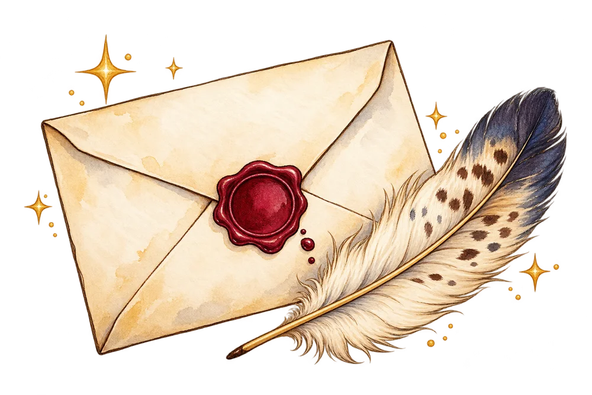
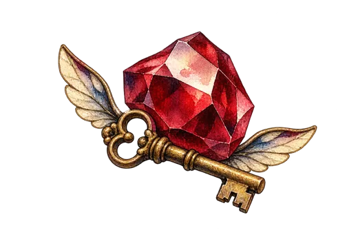
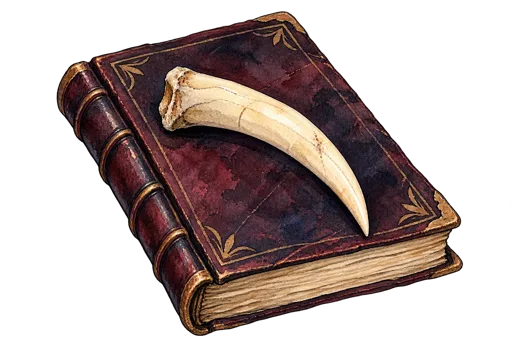
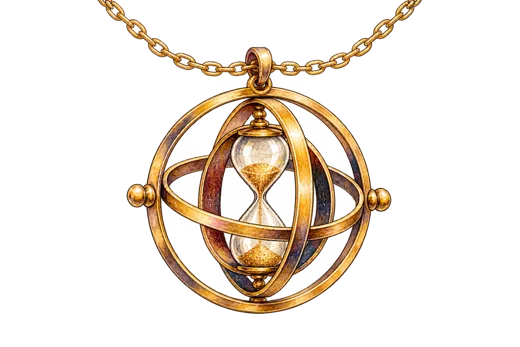
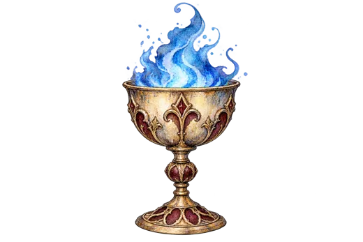
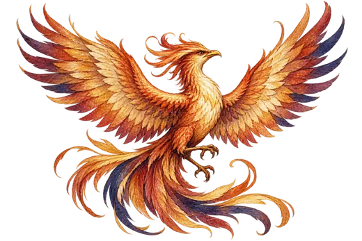
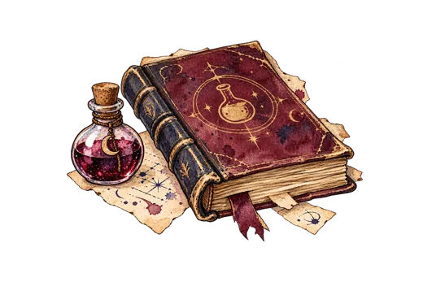
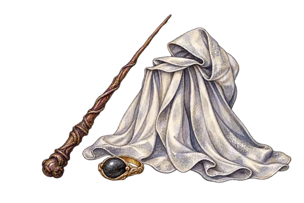

Дж. К. Роулинг
Гарри Поттер
Семь книг от первого письма из Хогвартса до Даров Смерти. Выберите часть, чтобы открыть её викторину.

Книги серии
Книга I

Философский камень
117 вопросов · Играть →Книга II

Тайная комната
120 вопросов · Играть →Книга III

Узник Азкабана
131 вопрос · Играть →Книга IV

Кубок огня
148 вопросов · Играть →Книга V

Орден Феникса
152 вопроса · Играть →Книга VI

Принц-полукровка
180 вопросов · Играть →Книга VII
